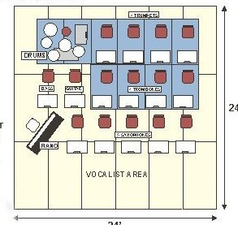
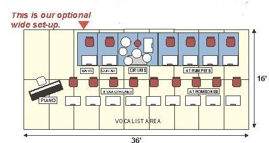

FAQ
How do I book the band? How much does it cost and how much space do you need? The NC Revelers are a great choice to bring excitement and a memorable difference to your next event. We provide quality entertainment for your party, adding an element of "showbiz" usually associated with the heyday of Hollywood or Las Vegas. Wedding receptions, fundraising events, special dances, conventions, trade shows, private parties, concerts...you name it, we can handle it. If your event is something we are not a good fit for we will tell you up front and try to assist you in finding the entertainment you need. As to space we usually ask for a 24 x 24 foot stage area, but in general we can fit anywhere a normal sized rock band fits. Our equipment is different but takes up no more room. We have had a lot of practice fitting where we need to be. For details on booking call Henry and he will set everything up for you and answer any questions. In general we cost no more than many rock bands or specialized wedding bands. It is a good idea to plan as far ahead as you can. Popular dates (Christmas, New Year's Eve, Valentines Day, etc.) can book pretty early. Securing a confirmed booking date now will prevent disappointment. Events are booked most often for two, three or four-hour events (this includes one customary break per hour). Most concert performances are two hours. Prices are based on the specific times and needs of your event. If the proposed performance venue is located more than two hour's driving time from Raleigh, there may be a surcharge for transportation (bus rental) and/or overnight accommodations. We will be happy to quote a definite price as soon as we know the exact requirements of the engagement (how long, how far, etc.).
Our band setup is the same as that of the great road orchestras of Les Brown, Tommy Dorsey, Glenn Miller and Count Basie. While smaller bands can play the same tunes, we strive for the depth and clarity that only full classic Big Band instrumentation can provide. The space requirements for a full band are essentially identical to those of a "cut down" 12 or 14 piece band. We feel that this wonderful music deserves to be played by the instrumentation it was written for with no corners cut even if it means we make a few dollars less for doing it right. We always have one vocalist and usually two in addition to the full band. We provide our own sound system and customized band equipment. Here are the physical requirements:
There are two basic configurations. Normally the band prefers to set up in three rows in a 24 foot square area. In some venues an optional wide setup may be necessary and the requirement for this is 36 feet wide but only 16 feet deep. Our set-up crew must have access to the performance site at least two hours prior to the event, and for at least two hours after the event for removal of our equipment and staging.
Successful Event Planning Most members of The NC Revelers have worked in providing music for special events for years. We have performed for just about every type of public and private event you can imagine. From small private parties to huge conventions, we have just about seen it all, including a president and a few governors. Many of these events have been carefully and even professionally planned but mixed in with those is the occasional "train wreck" . Since many people only plan one or a few big events in a lifetime, We thought we would summarize some of our hard won experience in our part of of the entertainment business for your use. It may not be everything you need, but it will give you a few things to consider as you start the planning process. Advance Planning If you are planning a large big event like a fund raiser or corporate , we suggest putting together a committee to plan your event starting at least 6 months and preferably a year ahead. This is particularly true of reunions where it may take some time to track down all the potential guests. Decide on the time of year and survey what else is going on in that time period. With only 52 weekends in a year, some already taken by holidays, there are a limited number of potential dates. While some conflicts are inevitable, careful consideration and a "save the date" card to your potential guest list will make a big difference especially your top contributors in the case of fund raisers. These are usually the businest people and you want them to know about your event first. We should mention here that if you plan for people to pay money to come to your event, whatever the cause, live music is very important. While there are some very nice people in the DJ business, a top flight event is not the sort of gathering one usually associates with a DJ, and that includes those with the big out of town reputation. Basically a DJ is going to amplify his music to the point of ear pain, which prevents conversation. The very people you are trying to get to contribute will be the ones leaving after dinner with a headache. In the case of a wedding, people who have traveled many miles to honor the wedding party cannot communicate across a table. Live music is not only music but also entertainment. While a big band can play loudly, there are frequent soft passages for contrast and the various combinations give color and interest to the music. Conversation is not only possible but there is something visually interesting happening to talk about. Funding The budget for your event is an important consideration. Decide how much you need to spend to get the event off the ground. This should include ballroom rental, food, decorating and of course the entertainment which we naturally suggest should be US. Also to be considered are minor rentals, catering and bartenders, advertising and ticket printing. Large family events such as weddings frequently require almost as much effort as a large corporate event. If you don't have a staff to draw from, at least make extensive lists of what you will need and draw up a timetable for getting everything in place. Theme Events Is there a Theme for the event? This is the focus of your party. Some suggestions: Cabaret night, Hollywood Ball, Las Vegas Show, USO show,Fitzgerald Follies, Capone's Speakeasy, Casino night etc. The idea is to come up with a theme that your potential attendees will find glamorous and entertaining. Some people even extend the "theme" idea into very large weddings. If you do this remember any family sensitivities or concerns. Location, Location, Location! Reserve the hall. Good ones are booked far in advance. Don't wait and find out you have no place for the party. The hall should suit the theme, you don't want a 21st century theme in a 1930's hotel, nor do you want to book a cabaret dance in a glass tower if you can help it. Decoration can make up for this, but walking to an old mansion ballroom adds a LOT to a theme based on F. Scott Fitzgerald. As part of this you need to make sure you have enough room for the projected attendance as well as service, seating and the Orchestra. Book The Band It is not a good idea to splurge for the food and skimp on the entertainment. Next year, guess what your audience will remember? Will it be the food and flowers or the best musical entertainment they had heard in years? The best bands are not cheap and you are more likely to have a successful event. Of course we suggest the NC Revelers Orchestra which will give you more show for your money than any other. Catering Contract with your caterer for food service. You may wish to obtain bids from several reputable caterers. Needless to say the better ones are as busy as the best bands. Many of them can help you with decorations and other necessities and sometimes they know about halls or bands. Tips From Experience No matter what your decorator tells you do not separate the band from the dance floor! If you do,the band loses communication with the audience and becomes a jukebox. Make sure the dancers are right in front of the band. Also speaking of decorators, remind yours that the band will need to USE the bandstand and that there must be room for the band AND its equipment and lighting. All of this should be coordinated with the entertainment and planned for and incorporated into the "vision" for the event. We have seen more than one decorator become upset at necessary changes to allow the band to do its job, such as potted plants being moved in favor of necessary lighting or sound equipment. It is always better to work together from the beginning than have disputes arise the day of the event. We will be happy to work with you to see that your event and our part of it goes smoothly. Make sure your hall is the right size for the event. If you have a hall for 1000 and have 200 at your party they will spread to the walls and will not enjoy themselves. The best parties are held in a hall with no more seats than people. Just ask the social chairman of any fraternity or sorority. In larger rooms it is a good idea to set the room with tables layered very near the dance floor and place the bar and food in back so that traffic to the bar and food service does not cross the dance floor. This helps concentrate the guests near the entertainment and as the audience fades near the end of the evening, the dance area is still concentrated and the remaining guests have a much better time. Publicity Publicity is a big key to a successful event. In general, ten people need to be aware of the event for every one ticket sold. Keep your ticket prices fairly reasonable unless you are really going for "exclusive". If a thousand people attend this year and it's a success two thousand will WANT to attend next year and you can raise prices. The same reasoning applies between one hundred and two hundred attendees. If you need help with publicity we can advise you on the basics as well as provide contact information to professionals who can help you. You may wish to provide a "wind down" time near the end of the event and serve coffee after the bar closes. There is a great emphasis on "designated drivers" these days and promotion of the safety of your guests is important. If you have a program other than dancing, make sure it starts at a normal band break time unless you need the band to particpate.The NC Revelers Orchestra can provide fanfares, short marches and other musical "fills" for a program if this is coordinated in advance. Coordination of scheduled activities is particulary important at weddings where there are toasts and speeches. This can be helpful for several reasons. Not only do you get the maximum music from a live orchestra, but tight scheduling can prevent "Uncle Fred" from monopolizing the microphone and turning a simple toast into an unwanted marathon speech.
How long should my reception last? We recommend about three hours
although four hour receptions are fairly common. We see very few
longer than four hours. The first hour will be taken up by the band
entertaining your guests while you are finishing up with pictures. The
second hour for the dances with father and mother and the all
important cutting of the cake. Band breaks are an ideal time for
speeches and testimonials and we will of course give you a great
fanfare for a toast at any time. If you go for a three hour event,
just limit the length and number of the speeches!
I plan a traditional reception with many well known wedding
conventions, how would your music fit into our plans? Important
considerations would be music for:Bride and Groom entrance into
reception.Bride's first dance with her new husband as Mr. & Mrs.
Bride's dance with father and father-in-law. Fanfare for Cake Cutting,
a Drumroll/fanfare for bouquet toss and if you are observing the
garter toss tradition we have a handy short version of "The Stripper"
for that too! We also can provide special music for ethnic traditions
if desired.
Do you have suggested songs for the First Dance? Slow tunes that have
stood the test of time include Glenn Miller's "Moonlight Serenade",
Carmichaels's "Star Dust" "The Nearness of You".We also have a good
selection of more recent rock style tunes if you prefer something
contemporary. Faster tunes could include: "The Best is Yet to Come",
"Fly Me to the Moon" or "The Way You Look Tonight".These are a few
among hundreds, including some contemporary tunes. If you wish special
music, we can obtain or arrange most any special tune. There may be a
charge for custom arranging but usually we can find the tunes you
want.
Will you hold a date while I decide on the music? We will take an
inquiry on your date and call you if another call on the date comes
in. At that point, a decision will be needed immediately along with a
deposit and signed contract if you wish to reserve the date. Our
advice is to contract for your musical entertainment as soon as you
book the hall for your reception. Remember that particularly in the
Spring and Summer, there are many weddings and only about sixteen or
so ideal dates. Call the NC Revelers Orchestra at 919-847-2263 today
to book a lifetime of memories for your wedding, anniversary or other
special event.